- 00 开篇词 JavaScript的进阶之路.md.html
- 01 函数式vs.面向对象：响应未知和不确定.md.html
- 02 如何通过闭包对象管理程序中状态的变化？.md.html
- 03 如何通过部分应用和柯里化让函数具象化？.md.html
- 04 如何通过组合、管道和reducer让函数抽象化？.md.html
- 05 map、reduce和monad如何围绕值进行操作？.md.html
- 06 如何通过模块化、异步和观察做到动态加载？.md.html
- 07 深入理解对象的私有和静态属性.md.html
- 08 深入理解继承、Delegation和组合.md.html
- 09 面向对象：通过词法作用域和调用点理解this绑定.md.html
- 10 JS有哪8种数据类型，你需要注意什么？.md.html
- 11 通过JS引擎的堆栈了解闭包原理.md.html
- 12 JS语义分析该用迭代还是递归？.md.html
- 13 JS引擎如何实现数组的稳定排序？.md.html
- 14 通过SparkPlug深入了解调用栈.md.html
- 15 如何通过哈希查找JS对象内存地址？.md.html
- 16 为什么环形队列适合做Node数据流缓存？.md.html
- 17 如何通过链表做LRU_LFU缓存？.md.html
- 18 TurboFan如何用图做JS编译优化？.md.html
- 19 通过树和图看如何在无序中找到路径和秩序.md.html
- 20 算法思想：JS中分治、贪心、回溯和动态规划.md.html
- 21 创建型：为什么说Redux可以替代单例状态管理.md.html
- 22 结构型：Vue.js如何通过代理实现响应式编程.md.html
- 23 结构型：通过jQuery看结构型模式.md.html
- 24 行为型：通过观察者、迭代器模式看JS异步回调.md.html
- 25 行为型：模版、策略和状态模式有什么区别？.md.html
- 26 特殊型：前端有哪些处理加载和渲染的特殊“模式”？.md.html
- 27 性能：如何理解JavaScript中的并行、并发？（上）.md.html
- 28 性能：如何理解JavaScript中的并行、并发？（下）.md.html
- 29 性能：通过Orinoco、Jank Busters看垃圾回收.md.html
- 30 网络：从HTTP_1到HTTP_3，你都需要了解什么？.md.html
- 31 安全：JS代码和程序都需要注意哪些安全问题？.md.html
- 32 测试（一）：开发到重构中的测试.md.html
- 33 测试（二）：功能性测试.md.html
- 34 测试（三）：非功能性测试.md.html
- 35 静态类型检查：ESLint语法规则和代码风格的检查.md.html
- 36 Flow：通过Flow类看JS的类型检查.md.html
- 37 包管理和分发：通过NPM做包的管理和分发.md.html
- 38 编译和打包：通过Webpack、Babel做编译和打包.md.html
- 39 语法扩展：通过JSX来做语法扩展.md.html
- 40 Polyfill：通过Polyfill让浏览器提供原生支持.md.html
- 41 微前端：从MVC贫血模式到DDD充血模式.md.html
- 42 大前端：通过一云多端搭建跨PC_移动的平台应用.md.html
- 43 元编程：通过Proxies和Reflect赋能元编程.md.html
- 结束语 JavaScript的未来之路：源于一个以终为始的初心.md.html
- 捐赠
01 函数式vs.面向对象：响应未知和不确定
你好，我是石川。
编程模式（programming paradigm）可以说是编程语言的元认知。从编程模式的角度看JavaScript，它是结构化的、事件驱动的动态语言，且支持声明式和指令式两种模式。所以我们说，JavaScript是一个多模式（multi-paradigm）的语言，也是一门“丰富”的语言。
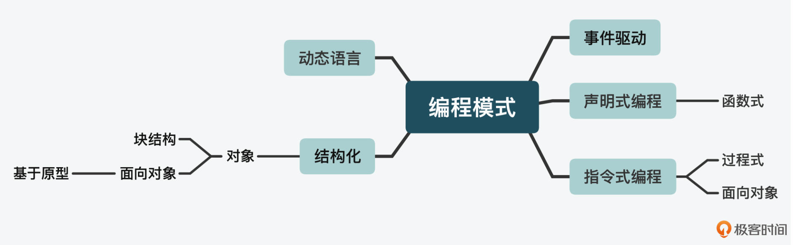
在JavaScript所支持的编程模式中，用得最多的是面向对象（OOP object oriented programming）和函数式（FP functional programming）两种，其中又以面向对象的普及率最高。现在介绍面向对象的书已经很多了，函数式因为受众相对小一些，支持的语言少一些，所以被提及的也相对比较少。
我猜你也许已经对这两种编程模式有所了解，甚至会比较熟悉，但我之所以还是要在第一节课去强调这个话题，是因为你在学习JavaScript时，可能会面对以下至少 1个核心痛点：
- 如果你已经学过传统的面向对象语言，那么在学JavaScript的时候，很可能对函数式的理解和运用不够深入；
- 反之，如果你一开始就学习JavaScript，只是停留在开发一些简单应用上，可以说你对它的面向对象的理解和运用，也不会很深入。
这两种学习困扰，很多时候会导致我们刚知道了点概念，就碰上了千奇百怪的副作用，然后我们发现还需要去学习解决它的办法，最后往往很容易就放弃了。
补充：在开篇词里，我提到函数式+响应式编程可以对抗不确定性。这个概念不只是在编程中，它也是一个跨学科的研究。比如在AI、机械和航空航天工程这些硬科技的领域，以及很多知名的大学（如伯克利、麻省理工）和政府机构（如NASA），都对System Dynamics and Controls开展了很深入的研究。其核心就是研究在动态情况下如何做到系统控制，其中很重要的一点就是处理波动和干扰。
而在函数式编程中，我们通常会把各种干扰，就叫做副作用（Side effect）。
所以接下来，我会先带你从“思维大厦”的顶层开始，来了解JavaScript语言的核心思想，然后再带你看看如何因地制宜地使用这两种编程模式来解决问题。这样一来，你在日后面对已知和未知问题，做复杂系统开发的时候，也能找到一套行之有效的方法了。
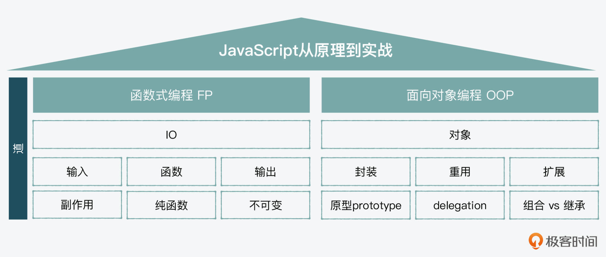
函数式编程
首先，我们一起来看看函数式编程，了解下函数是什么、它是做什么用的、在编程中可能会有哪些副作用，以及如何利用JavaScript的核心设计思想和工具，解决这些副作用。
函数是什么、如何使用？
一个函数由输入、函数和输出组成，这和我们在初中就学过的函数一样，函数是数据集到目标的一种关系，它所做的就是把行为封装起来，从而达到目标。
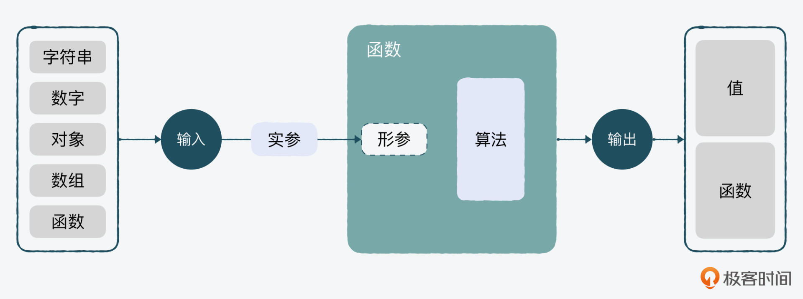
举一个最简单的例子：我们要实现一个“计算消费税”的工具，目标是通过产品价格计算出消费税。
以下代码中的productPrice是输入的形参（parameter），产品价格100元是传入的数据实参（argument），而calculateGST这个功能就是封装算法的函数本身；代码中输出的5，就是返回值（returned value），也就是消费税5元。
function calculateGST( productPrice ) {
return productPrice * 0.05;
}
calculateGST(100); // return 5
其实，很多开发者常用的jQuery就是一个工具集。我们打开jQuery在GitHub的源代码，可以看到里面有大大小小的工具助手。比如下面这个isArrayLike函数，就是一个帮助我们判断一个对象是不是类似数组的功能。这个功能也可以独立于jQuery库存在，这就是函数式编程最基本的使用。
function isArrayLike( obj ) {
var length = !!obj && obj.length,
type = toType( obj );
if ( typeof obj === "function" || isWindow( obj ) ) {
return false;
}
return type === "array" || length === 0 ||
typeof length === "number" && length > 0 && ( length - 1 ) in obj;
}
所以，通过isArrayLike可接受的参数可见，函数的输入值不仅可以是一个基础类型数据（primitive type），比如前面例子中的数字或者字符串；也可以是一个相对复杂些的对象类型数据（object type），包括对象本身和数组。甚至，函数本身作为对象，也可以是输入或输出值，我们把这种函数就叫做高阶函数（higher order functions）。
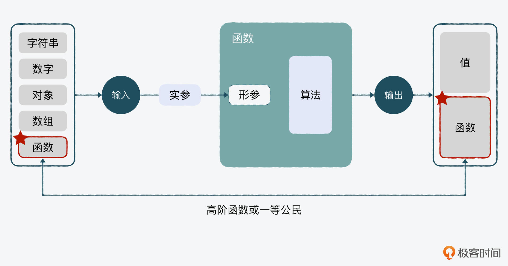
函数中都有哪些副作用？
前面我们说过，函数已经把算法封装了起来，那么函数里相对就是可控的，而比较不可控的是外部环境。这里，我们可以把不可控的外部环境分为三大类。
第一类，函数中最常见的副作用，就是全局变量（global variable）。比如下面的例子里，我们首先定义了一个全局变量x，之后每次在log它的值之前，都执行了不同的函数，但我们没法保证这些函数没有改变这个变量的值，也没法保证每次输出的结果是1。所以从输入开始，这种不确定性就存在了。
var x = 1;
foo();
console.log( x );
bar();
console.log( x );
baz();
console.log( x );
除了全局变量以外，另一个比较明显的问题就是 IO影响（IO effects）。这里的IO说的不是前面函数里的参数和返回值，而是类似前端浏览器中的用户行为，比如鼠标和键盘的输入，或者如果是服务器端的Node的话，就是文件系统、网络连接以及stream的stdin（标准输入）和stdout（标准输出）。
第三种比较常见的副作用是与网络请求（HTTP request）相关，比如我们要针对一个用户下单的动作发起一个网络请求，需要先获得用户ID，再连着用户的ID一起发送。如果我们还没获取到用户ID，就发起下单请求，可能就会收到报错。
减少副作用：纯函数和不可变
那么我们要如何减少以上这些副作用呢？在函数式编程中，有两个核心概念：纯函数（pure function）和不可变（immutability）。
这是一个“双循环”，纯函数更多解决的是“内循环”；而不可变更多考虑的是“外循环”。
纯函数的意思是说，一个函数的返回结果的变化只依赖其参数，并且执行过程中没有副作用。也就是说打铁还需自身硬，面对外界的复杂多变，我们要先保证函数封装的部分本身是稳固的。比如前面消费税计算器的例子，当输入的产品价格参数为100时，输出的结果永远是5。无论有什么干扰，它都不会返回一个不是5的数字，除非你换一个参数。
我们再来看下面这个例子，当把税率从函数中抽离出来，放在函数外作为变量时，它就不是一个纯函数了，因为随着这个变量的变化，计算结果会有所不同。所以，纯函数就可以通过减少对外界不确定因素的依赖，来减少副作用。
var rate = 0.05;
function calculateGST( productPrice ) {
return productPrice * rate;
}
calculateGST(100); // return 5
除了纯函数，函数式编程解决副作用的另一个核心思想，就是不可变。这个如何理解呢？我们可以通过JavaScript中自带的splice和slice来举例。
const beforeList = [1,2,3,4]
console.log(beforeList.splice(0,2))
console.log(beforeList.splice(0,2))
//[ 1, 2 ]
//[ 3, 4 ]
const beforeList = [1,2,3,4]
console.log(beforeList.slice(0,2))
console.log(beforeList.slice(0,2))
//[ 1, 2 ]
//[ 1, 2 ]
可以看到，数组中的splice方法，在对数据进行了处理后，改变了全局中的beforeList的值，所以是可变的。而slice在执行之后的结果，没有影响全局中的beforeList的值，所以它是不可变的。也是因为这样，在开发中，如果要保证不可变，我们就不能用splice，而用slice。
所以，不可变就是在减少程序被外界影响的同时，也减少对外界的影响。因为如果你把一个外部变量作为参数作为输入，在函数里做了改变，作为输出返回。那么这个过程中，你可能不知道这种变化会对整个系统造成什么样的结果。
而且在数组中，你还可以看到更多类似splice和slice这种纯函数、非纯函数，以及可变与不可变的例子。
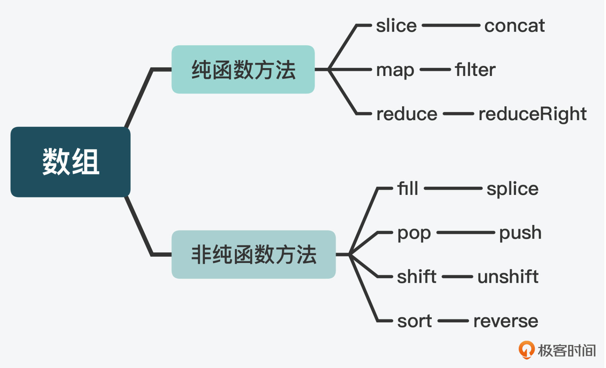
另外，从纯函数和不可变的设计思想中，我们还可以抽象出一个概念。
因为“副作用”首先是一个作用（effect），而作用遵循的是一个因果（cause and effect）关系。那么，从值的角度来看，“纯函数”对值只影响一次，而“不可变”完全不影响。
如何理解“纯函数”对值只影响一次呢？这里有一个幂等（idempotence）的概念。如果你做过大型的交易类应用的话，应该对这个概念不陌生。比如说，有时用户对同一个订单多次重复发出更新请求，这时返回的结果不应该有差别。
在数学中，幂等的意思是不管我们把一个函数嵌套多少次来执行，它的结果都应该是一样的。比如在这个Math.round四舍五入的例子里，无论你嵌套执行几次，结果都是一样的。
//数学幂等
Math.round(((0.5)))
在计算机中，幂等的意思是一个程序执行多次结果是一样的。比如，假设我们有一个adder函数，3和4相加永远返回7。所以，你其实可以把数学里的概念迁移过来。
//计算机幂等
adder (3, 4) // 返回 7
adder (3, 4) // 返回 7
好，然后我们再来看看如何理解“不可变”对值完全不影响。
通过前面array slice和splice的例子，你应该能感觉到，splice更像是一块橡皮泥，一开始它可能是个方块儿，你可以捏出腿和脑袋，它就成了一个小人儿，也就是说它本身发生了变化。而slice在处理完后是形成了一个新的数组，但原始的数组完好无损，它是把值当成乐高积木，而不是橡皮泥。把这种思想用到状态管理里，你就会记录状态的变化，而不会篡改状态。
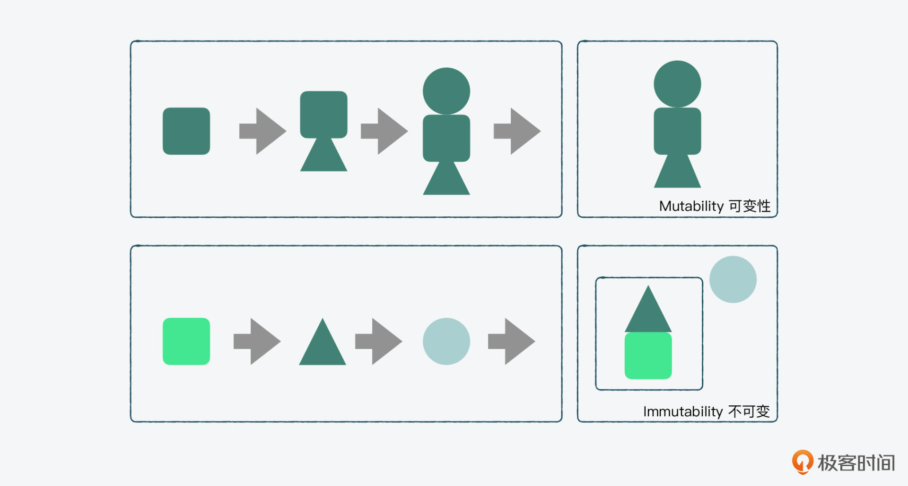
总之，我们可以看到函数式编程最核心的地方，就是输入输出和中间的算法，我们要解决的核心问题就是副作用。而为了解决副作用，我们需要掌握两个重要的概念，一个是纯函数，一个是不可变。纯函数强调的是自身的稳定性，对结果只影响一次；而不可变强调的是和外界的交互中，尽量减少相互间负面的影响。
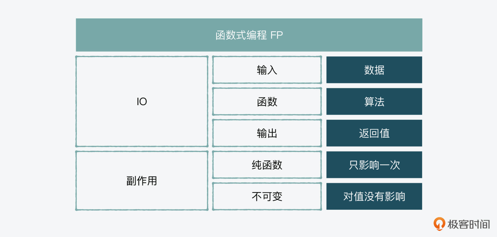
面向对象编程
我们再来看看面向对象。如前面所说，如果我们用函数来做一个税率计算工具，判断一个数是不是类数组的对象，是没问题的，而且我们可以放心，如果希望它“纯粹”，那么它运行的结果就可以基于我们定义的法则，没有惊喜，没有意外。那这样不就足够了？为什么我们还需要对象？下面我们就来看看。
对象是什么、如何创建？
开篇词里，我说过一个“摸着石头过河”的例子，首先得有站在岸边的“你”，这个“你”就是对象，如果没有对象，就算是有一个工具（function），比如有快艇在岸边，它也只能停靠在那儿；或者你有游泳这个方法（method），但它也只有在你身上才能发挥作用。
这其实就是对象的意义。我们在做业务系统开发的时候，会面对各种各样的业务对象，比如“表单”“购物车”“订单”，这些都可以看做是对象。所以我们说，工具和方法通常是服务于对象的。
举个例子，假设我们有一个微件对象，我们想定义一个属性是它的微件名称widgetName，并给它定义一个identify的功能来识别自己的名称，那么在JavaScript中，其实就可以通过以下代码来实现：
var widget = {
widgetName : "微件",
identify : function(){
return "这是" + this.widgetName;
}
};
console.log(widget.widgetName); // 返回 "微件"
console.log(widget.identify()); // 返回 "这是微件"
为什么需要封装、重用和继承？
实际上，如果说函数加对象组成了生产力，那么封装、重用和继承则可以用来组成生产关系。
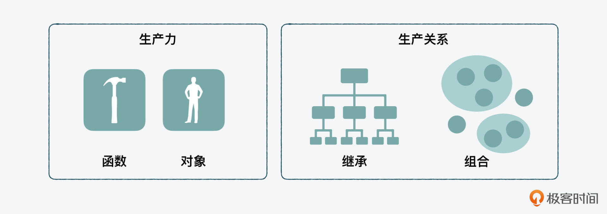
封装最常见的使用就是在我们做组件化设计的时候，比如在一个旅行网站页面中，我们看到的筛选器、日历、结果区域都可以看做是不同的模块（module）或组件（ component），这些组件是通过封装导入加载到页面的。
重用就是把可以重复使用的功能抽象到一个类里，每次只是创建一个它的实例对象来使用。比如我们的页面上有很多按钮，它们的功能大同小异，这时我们就可以把它抽象出来成为一个类（class），每一个按钮都是一个按钮类中的实例（instance）。
当然，上面我们说的按钮可能虽然功能上大同小异，但还是有具体差别。这时，我们可以把通用功能放到抽象类；而一些特定的行为或属性，我们可以通过继承放到实现类中，这样在继承了基础的父类（parent class）功能的基础上（extend），我们能够在子类（child class）中作一些改动。
但是如果一个程序中，父子的层级过于复杂，也会变得“官僚化”，如果父类有了问题，就会牵一发动全身，而且抽象的层级过多，也会让代码难以理解。
实际上，在面向对象中，也有组合的概念，就是一个子类不是继承的某个父类，而是通过组合多个类，来形成一个类。这也很像我们如今的职场，公司为了应付外界竞争压力，内部会有一个个的敏捷团队，通过每个成员自身价值和团队“组合”产生1+1>2的价值，而不是强调依靠某种从属关系。
所以，在面向对象的编程中，也有“组合”优于“继承”的概念。不过在实际情况下，继承也不是完全不可取的，在开发中，我们使用哪种思想还是要根据情况具体分析。
什么是基于原型的继承？
好，既然说到了继承，那我们还需要明确一个问题，什么是基于原型的继承？
这里我们首先要搞清楚一点：JavaScript中的类和其它面向对象的语言，究竟有什么不同？
对于传统的面向对象的编程语言来说，比如Java，一个对象是基于一个类的“蓝图”来创建的。但是在JavaScript中，就没有这种类和对象的拷贝从属关系。实际上，JS里的对象和“类”，也就是构建函数之间是原型链接关系。
比如，在下图左边基于类的例子中，以一个类作为蓝图，可以创建两个实例。而右边基于原型的例子里，我们可以看到通过一个构建函数构建出的两个对象，是通过原型链和构建函数的原型相连接的，它们并不是基于一个蓝图的复制拷贝和从属关系。
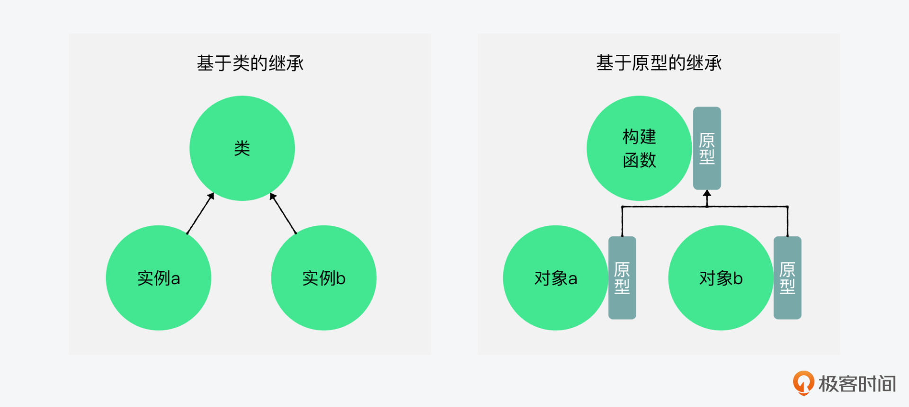
虽然后来JavaScript在ES6之后也加入了类，但实际上它只是运用了语法糖，在底层逻辑中，JavaScript使用的仍然是基于原型的面向对象。
在ES6+中，class的语法糖用法基本和之前的类似，只是把function变成了class：
class Widget {
constructor (){
// specify here
}
notice(){
console.log ("notice me");
}
display(){
console.log ("diaplay me");
}
}
var widget1 = new Widget();
widget1.notice();
widget1.display();
好，我们再通过一个例子来实际观察下原型链。下面的代码中，我们是通过函数自带的call()方法和对象自带的Object.create()方法，让Notice作为子类继承了Widget父类的属性和方法，然后我们创建了两个实例notice1和notice2。
而这时，我们如果用getPrototypeOf来获取notice1和notice2的原型，会发现它们是等于Notice原型。当我们用display方法调用这个方法时，实际调用的是原型链里Notice的原型中的方法。
function Widget(widgetName) {
this.widgetName= widgetName;
}
Widget.prototype.identify = function() {
return "这是" + this.widgetName;
};
function Notice(widgetName) {
Widget.call(this, widgetName);
}
Notice.prototype = Object.create(Widget.prototype);
Notice.prototype.display= function() {
console.log("你好， " + this.identify() + ".");
};
var notice1 = new Notice("应用A");
var notice2 = new Notice("应用B");
Object.getPrototypeOf(notice1) === Notice.prototype //true
Object.getPrototypeOf(notice2) === Notice.prototype //true
notice1.display(); // "你好，这是应用A"
notice2.display(); // "你好，这是应用B"
而这就印证了前面所说的，在传统的面向对象语言，比如Java里，当我们用到继承时，一个类的属性和功能是可以被基于这个类创建的对象“拷贝”过去的。但是在JavaScript里，虽然我们用Notice创建了notice1和notice2，但是它俩并没有将其属性和功能拷贝过来，而是默认通过原型链来寻找原型中的功能，然后利用“链接”而不是“拷贝”来。
for (var method in Notice.prototype) {
console.log("found: " + method);
}
// found: display
// found: identify
所以，我们通过上面的for in，就可以找出所有原型链上的功能，而如果我们想要看Notice函数的原型对象都有哪些功能的话，可以看到返回的是display和identify。这就证明，除了Notice自己的原型对象和自己的display功能之外，它也链接了Widget里的identify功能。
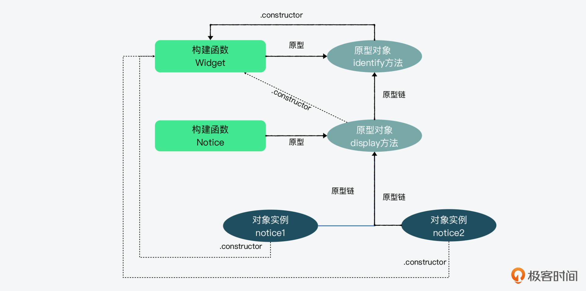
好，现在我们知道了，面向对象编程最核心的点就是服务业务对象，最需要解决的问题就是封装、重用和继承。在JavaScript中，面向对象的特殊性是基于原型链的继承，这种继承更像是“授权”，而不是传统意义的“父子”继承。而且为了解决继承的层级过多的情况，在面向对象中，也有组合优于继承的思想。
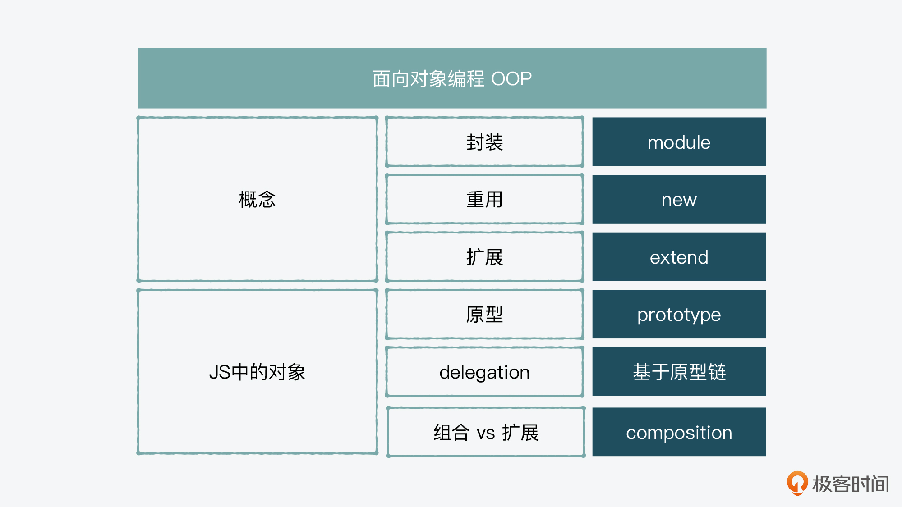
总结
这节课，我们主要是了解了函数式编程和面向对象编程的核心概念，它们一个是管理和解决副作用，一个是服务于业务对象。
而理解这部分内容，对于我们接下来要深入了解的这两种编程模式，以及后面会学习的各种数据结构和算法、JavaScript的各种设计模式等等，都有很强的指导意义，它能为我们学好并更好地应用JavaScript这门语言，提供扎实的理论基础。
思考题
我们提到函数式编程的时候，说到为了解决副作用，因此有了不可变和纯函数的概念，那么你觉得JavaScript中的常量（const，constant）算不算不可变呢？
欢迎在留言区分享你的答案、交流学习心得或者提出问题，如果觉得有收获，也欢迎你把今天的内容分享给更多的朋友。
延伸阅读
© 2019 - 2023 Liangliang Lee. Powered by gin and hexo-theme-book.